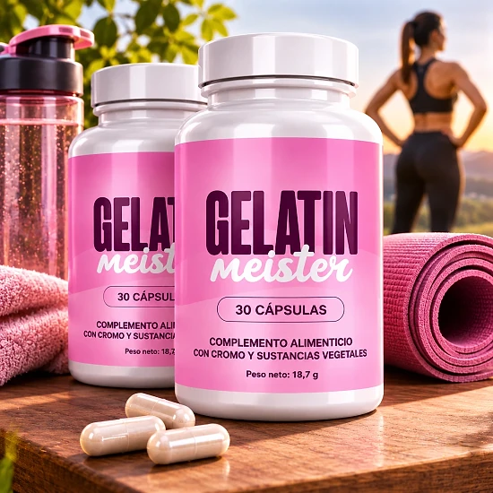
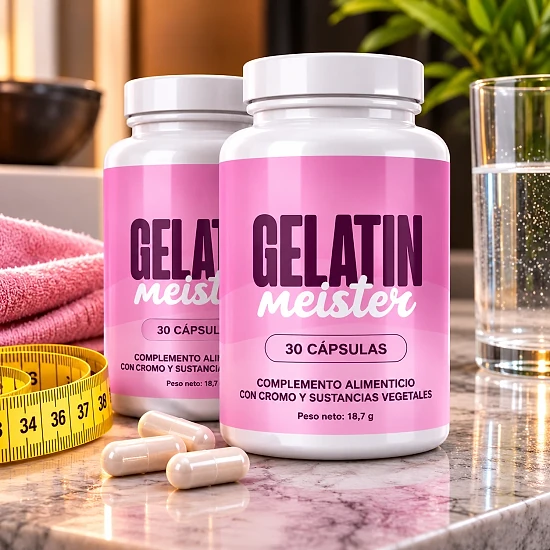
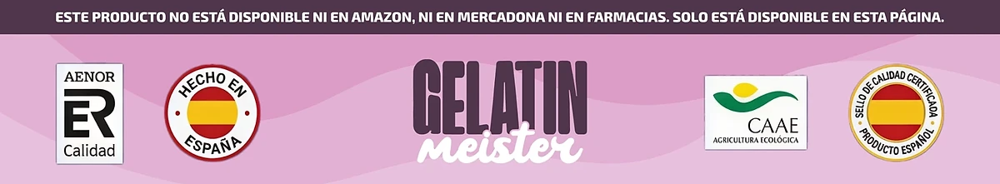

¿Qué es Gelatin Meister y cómo actúa?
Gelatin Meister es un complemento alimenticio en cápsulas que el sitio web oficial presenta como una mezcla adelgazante natural. Está pensado para acompañar el control del peso, el metabolismo y el control del apetito, dentro de una alimentación equilibrada y de una actividad física regular.
A pesar de su nombre, la fórmula no contiene gelatina en polvo: la etiqueta española lo describe como un «complemento alimenticio con cromo y sustancias vegetales». Cada frasco contiene 30 cápsulas, es decir, un mes de uso con una cápsula al día, con un peso neto de 17,01 g.
La fórmula reúne 11 ingredientes: cromo, extracto de té verde, vinagre de sidra de manzana, berberina, jengibre, canela cassia, naranja amarga, cayena, hoja de banaba, ginseng coreano y resveratrol. Según el sitio, cada ingrediente ha sido seleccionado y dosificado con cuidado para favorecer su absorción.
¿Cómo actúa? El sitio web oficial recuerda que el cromo contribuye al metabolismo normal de los macronutrientes. Los extractos vegetales como el té verde, la cayena y la naranja amarga se describen como ingredientes relacionados con el metabolismo, mientras que el jengibre, la canela y la berberina se destacan por favorecer una digestión ligera.
El enfoque es progresivo. Según el sitio oficial, los primeros cambios, como menos antojos de dulces y una digestión más ligera, suelen aparecer después de dos o tres semanas, y la marca recomienda tomarlo durante al menos 90 días para un apoyo óptimo.
La etiqueta indica que el producto se distribuye en la Unión Europea a través de Digistore24 MSLW Limited, en Dublín, con una dirección para devoluciones en los Países Bajos.
Gelatin Meister sigue siendo un complemento alimenticio: no está destinado a diagnosticar, tratar, curar ni prevenir ninguna enfermedad y no sustituye una alimentación variada ni un estilo de vida saludable. El sitio oficial aclara que los resultados pueden variar de una persona a otra.
Gelatin Meister – Ingredientes
La información nutricional de Gelatin Meister indica la dosis de cada ingrediente por cápsula. Esta es la composición que aparece en la etiqueta española y en el sitio web oficial:
Cromo, como picolinato de cromo (100 µg, 250 % del VRN): contribuye al metabolismo normal de los macronutrientes.
Extracto de hoja de té verde (154 mg): planta rica en catequinas, que el sitio relaciona con la termogénesis.
Vinagre de sidra de manzana (150 mg): indicado por la marca para la digestión y el control del apetito.
Berberina HCL (85 mg): compuesto vegetal de la tradición herbolaria.
Raíz de jengibre (50 mg) y corteza de canela cassia (20 mg): especias usadas tradicionalmente para el bienestar digestivo.
Naranja amarga (20 mg), cayena (20 mg), hoja de banaba (5 mg), ginseng coreano (5 mg) y resveratrol (1 mg): extractos vegetales que completan la fórmula.
La naranja amarga es una fuente natural de sinefrina, y el resveratrol procede de un extracto de raíz de Polygonum cuspidatum (centinodia japonesa).
Los demás componentes son la cápsula vegetal (hipromelosa), la celulosa microcristalina y los antiaglomerantes. Solo el cromo tiene un valor de referencia de nutrientes: para los extractos vegetales, la etiqueta aclara que no se ha establecido ningún VRN.
Gelatin Meister – Efectos secundarios
Según el sitio web oficial, Gelatin Meister está formulado con ingredientes naturales y es bien tolerado por la mayoría de las personas. Los efectos secundarios se describen como poco frecuentes y normalmente leves, por ejemplo pequeños cambios digestivos durante los primeros días de adaptación.
Aun así, la fórmula contiene ingredientes activos, como el extracto de té verde, la naranja amarga y la cayena, a los que algunas personas pueden ser sensibles. No se debe superar la dosis recomendada, y la etiqueta indica que el producto no debe utilizarse en menores de 18 años, ni en mujeres embarazadas o en período de lactancia.
La etiqueta incluye una advertencia específica: las personas con diabetes o hipoglucemia, al igual que quienes toman medicamentos, deben consultar a un médico antes de usarlo. Las preguntas frecuentes del sitio mencionan en particular la diabetes, la hipertensión y los anticoagulantes, y recomiendan dejar al menos dos horas entre el complemento y otros medicamentos.
No utilice el producto si el sellado de seguridad está dañado o no existe. Ante cualquier molestia o reacción inusual, conviene interrumpir la toma y pedir consejo a un profesional de la salud, mostrándole la etiqueta del producto. Las reacciones varían de una persona a otra, y la opinión de un profesional sigue siendo la referencia más segura.
Gelatin Meister – Dosis
La etiqueta es clara: los adultos toman una (1) cápsula al día. La página de venta aconseja tomarla con un vaso grande de agua, preferiblemente antes de una comida principal.
Un frasco de 30 cápsulas corresponde, por tanto, a un mes de uso. La página de pedidos habla de dos cápsulas al día, pero la etiqueta del producto indica una sola: esa es la indicación que hay que seguir, sin superar nunca la dosis recomendada.
La constancia marca la diferencia. El sitio oficial indica que los primeros efectos, como menos ataques de hambre y una mejor digestión, suelen notarse después de dos o tres semanas, que pueden verse resultados más visibles tras cuatro a seis semanas, y recomienda una toma de al menos 90 días. Cada persona reacciona de forma diferente.
Para obtener mejores resultados, la marca aconseja combinar Gelatin Meister con una alimentación equilibrada y con actividad física regular. La etiqueta recuerda que los complementos alimenticios no deben utilizarse como sustitutos de una dieta variada y equilibrada ni de un estilo de vida saludable.
El frasco debe guardarse en un lugar fresco y seco, por debajo de 30 °C, y fuera del alcance de los niños. Conviene tomar la cápsula siempre a la misma hora para no olvidarla.
Gelatin Meister – Reembolso
Gelatin Meister cuenta con una garantía de satisfacción de 60 días, según el sitio web oficial. Si el producto no cumple las expectativas, se puede solicitar el reembolso íntegro del importe de la compra, de acuerdo con las condiciones publicadas por la marca.
Plazo: la solicitud debe hacerse dentro de los 60 días siguientes a la fecha de compra, y la política de reembolso exige la devolución de todos los frascos, vacíos o llenos.
Paso 1: escribir un correo electrónico al servicio de atención al cliente, a la dirección support@centralmeister.com, indicando el número de pedido y el motivo de la devolución, junto con el nombre, la dirección y los datos de contacto. El sitio aclara que no es necesario esperar una respuesta antes de enviar el paquete.
Paso 2: devolver el paquete a la dirección indicada en el sitio oficial y en la etiqueta: Gelatin Meister Returns, Kleine Esch 669, 2841 MK Moordrecht, Países Bajos. Es importante conservar el número de seguimiento, porque las devoluciones sin seguimiento no se procesan; los costes de la devolución corren a cargo del cliente.
Paso 3: tras recibir y revisar el paquete, el servicio de atención confirma por correo electrónico si el reembolso ha sido aprobado. En ese caso, el abono llega al método de pago original en un plazo de 5 a 10 días hábiles.
La etiqueta también incluye la dirección helpdesk@digistore24.ie. La política completa se encuentra en el sitio web oficial, y es mejor leerla antes de hacer el pedido.
Gelatin Meister – ¿Dónde comprarlo?
Gelatin Meister se vende en su sitio web oficial, gelatinmeister.com, y el pago lo gestiona Digistore24. Según la información oficial, el producto no está disponible ni en Amazon, ni en supermercados, ni en farmacias.
Los frascos que ofrecen otros vendedores pueden parecer idénticos, pero su procedencia y sus condiciones de almacenamiento no se pueden verificar. En un complemento alimenticio, esto supone un riesgo real para la calidad y la seguridad, y una compra hecha en otro lugar podría no estar cubierta por la garantía de 60 días.
Por este motivo, la mayoría de los compradores pide Gelatin Meister directamente en el sitio web oficial. Comprar en la fuente permite recibir el producto original, con la atención al cliente y la garantía completa, y la página de pedidos indica un pago único.
Antes de confirmar el pedido, conviene comprobar que se está realmente en el sitio web oficial de Gelatin Meister, para evitar falsificaciones e imitaciones vendidas en internet.
Para asegurarse de recibir el producto auténtico, la mayoría de los usuarios elige comprar en el sitio web oficial.
¿Gelatin Meister es una estafa?
Según el sitio web oficial y la etiqueta, Gelatin Meister no parece una estafa. Se trata de un complemento alimenticio real, vendido a través de Digistore24, una plataforma de pago consolidada, y pensado para acompañar el control del peso y el metabolismo.
La etiqueta española muestra una información nutricional completa, con la dosis de cada uno de los once ingredientes. La declaración sobre el cromo corresponde a una función reconocida de este mineral.
El frasco indica también el distribuidor, Digistore24 MSLW Limited en Dublín, además de una dirección para devoluciones en los Países Bajos y una dirección de asistencia.
Algunos puntos invitan a la prudencia. La página de pedidos muestra una cuenta atrás y mensajes de existencias limitadas, y la página de venta habla de «quemar grasa» y de estudios clínicos sin citarlos. Ningún complemento hace adelgazar por sí solo: es mejor guiarse por la etiqueta y mantener expectativas realistas.
Cada pedido está cubierto por una garantía de satisfacción de 60 días, con un procedimiento de devolución explicado paso a paso.
Para los adultos que buscan un complemento diario sencillo que acompañe sus esfuerzos de control del peso, Gelatin Meister puede ser una opción a tener en cuenta, preferiblemente pedida en el sitio web oficial y tras consultar al médico en caso de tratamiento con medicamentos.
Para comprobar los detalles del producto o su disponibilidad actual, el sitio web oficial de Gelatin Meister sigue siendo la opción más segura.

Comprobar disponibilidad en el sitio web oficial
